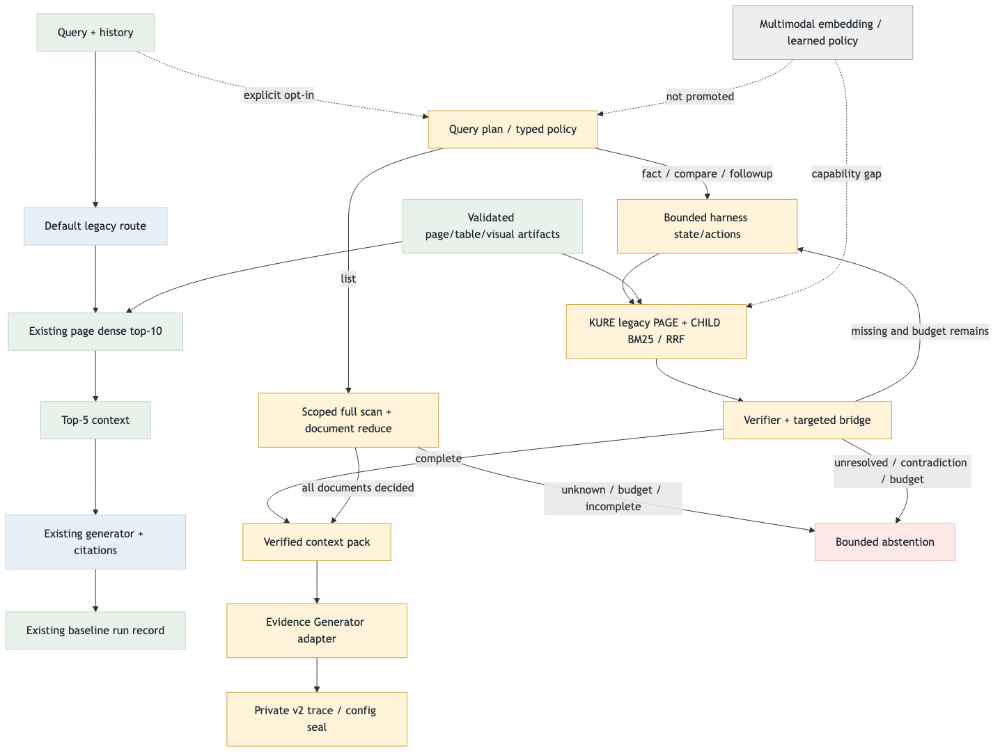

Evidence-Harness v1 릴레이샷
2026-09-02 · KURE 검색 재사용, 상태 기반 제어, 목록 전수 검사, private trace까지 연결한 비시각 로컬 전환 기록입니다.
결론
멀티모달 임베딩을 보류한 상태로 비시각 경로를 연결했습니다. 현재 질문과 대화 이력으로 계획을 세우고, KURE 페이지 검색과 child BM25를 결합한 뒤 부족한 근거를 다시 검색·검증합니다. 목록 질문은 별도 scoped scan/reduce 경로에서 문서별 판정을 모으며, 모든 대상의 판정이 끝나지 않으면 완전한 목록으로 출력하지 않습니다.
오케스트레이션 변경
현재 질문·history 기반 슬롯; fact/compare/followup와 list 경로 분리
기존 KURE page + child BM25 → RRF; 목록은 scoped scan/reduce
미학습 local LLM policy, missing 슬롯 재검색·bridge, LLM 근거 검증
필수 근거·인용 한도 확인 후 생성; runtime 설정까지 v2 trace로 봉인
목표 구조

현재 구현

Target/current PNG를 모두 생성하고 이미지를 확인했습니다. HTML의 로컬 파일 열기는 브라우저 정책으로 차단되어 정적 링크·이미지 경로만 검증했으며 브라우저 렌더 통과로 기록하지 않습니다. Target source · Current source
실제 로컬 구성
| 항목 | 현재 연결과 확인 상태 |
|---|---|
| Evidence | 98문서 · 9,331 page + 9,513 text = 18,844개. 현재 store는 기존 corpus에서 구조화 표·그림을 새로 복원하지 않았습니다. |
| Dense / lexical | nlpai-lab/KURE-v1 기존 page-part 벡터 9,331×1,024 재사용 + 새 child BM25. KURE는 CPU에서 query만 임베딩하며 RRF k=60으로 결합합니다. 새 child dense embedding은 아닙니다. |
| Reranker | Identity/no-op. 학습된 reranker는 아직 연결하지 않았습니다. |
| Planner / policy / verifier / generator | 실제 Mac 모델은 digest가 고정된 qwen3.8:27b-mlx입니다. GCP 목표 Qwen3-8B-AWQ의 실측으로 해석하지 않습니다. 제어 정책은 미학습 local LLM policy입니다. |
| 목록 처리 | 요청 범위 내 문서를 bounded scan/reduce합니다. unknown·예산 초과·미완료를 완전 목록으로 반환하지 않습니다. 98문서 전체 목록 실행의 지연·완전성은 미측정입니다. |
| Trace / 학습 준비 | v2의 config={harness,runtime} 전체 해시에 검색 provenance·모델·예산·visual capability를 포함합니다. v1 호환 유지. exporter는 준비 완료이며 SFT/RL 학습·reward·승격은 미실행입니다. |
릴레이 배치 상태
| 배치 | 결과 | 검증/다음 조건 |
|---|---|---|
| EH0 | 완료 | 플랜·계약·TODO·target/current flow 고정 |
| EH1 | 완료 | immutable EvidenceStore, page→child/object bridge, source hash/provenance |
| EH2–EH3 | 구현·합성 검증 완료 | scope-safe 검색/fusion, bounded action loop, 필수 근거 보존, 오류/기권 구분 |
| EH4 | 연결 완료 | Generator adapter·private trace·offline diagnostic/CLI. 합성 데이터 실제 모델 호출 성공 |
| EH5 | 실측·승격 조건 확인 중 | 기존 KURE artifact와 Mac 모델 확인됨. 승인 gold·sealed holdout·동일 judge 품질 비교·자원 실측을 추가해야 승격 판단 가능 |
| EH6 | exporter·seal gate 준비 완료 | 학습 미실행. 명시적 train/heldout 구분 필요; action snapshot이 없는 list receipt는 list_trajectory_not_trainable로 제외 |
| EH7 | 실제 검색 artifact 연결 | 98문서 Evidence 구축, 기존 KURE 인덱스 재사용, 실제 corpus query embedding·검색 확인 |
| EH8 | 목록 경로 구현·소규모 live 통과 | 3문서 scan/reduce 실호출 성공. 전체 corpus 실측 완료를 뜻하지 않음 |
| EH9–EH10 | 실호출·회귀 검증 완료 | 합성 fact·list와 실제 corpus 답변 성공, 전체 테스트 오류 0. commit/push 최종 상태는 릴레이 기록에 반영 |
검증 결과
이전 evaluation import 오류와 private fixture 경계를 수정했습니다. 누락된 private 자료를 요구하는 통합 검사만 skip하며 합성 계약 검사는 계속 실행합니다. Repository safety는 최근 620파일 검사에서 PASS입니다. 전체 테스트 오류·해결 · 실호출 분류·예산 오류와 해결
실호출 검증 기록
| 실행 | 상태 | 확인한 사실 / 남은 확인 |
|---|---|---|
| 합성 fact · 실제 Mac 모델 | PASS | 계획·근거 검증·생성 성공. 품질평가 점수는 산출하지 않았습니다. Trace SHA-256: f5c57d8c412b0fbe3c102a4e259b5b3464d1f9ccc760b88e6f1c3416b58a9466 |
| 실제 corpus 후속 질문 | PASS | Harness READY·5 actions 후 answered. 두 요청 속성 모두 답변했고 필수 근거 1개·생성 문맥 1개·페이지 인용 1개를 사용했습니다. Trace SHA-256: 6c9827def5955e46c53463165c326aa1991487f4b8f70bf46cdec9f255a4cdeb |
| 합성 목록 · 실제 Mac 모델 | PASS | 3문서 중 3문서 검사 완료, 조건 일치 2건·인용 2개. enumerate 6회 + planner/answer 각 1회 = 8회 호출. 전체 98문서 성능 측정은 아닙니다. Trace SHA-256: fe421b7afbac2874e081d91b26515cc7d9b463c646d9b0cacfcfbab6efc30d73 |
실제 corpus 지연: KURE query는 cold 3.772초 / warm 0.054초, verifier는 53.440초·58.422초였습니다. Harness 구간은 142.734초이며 planner 5.547초, generation 8.025초와 준비 시간을 제외한 값입니다. 이를 전체 E2E 지연으로 표시하지 않습니다. 생성 사용량은 input 973 / output 73 tokens입니다. 경로는 성공했지만 긴 검증 지연이 현재 제한이며 의미 품질 점수는 아직 없습니다.
멀티모달 임베딩 판단
| 항목 | 현재 | 멀티모달 완료 후 |
|---|---|---|
| 인터페이스 | conditional visual lane·object bridge·crop/provenance 필드 고정 | provider가 같은 Retriever/Verifier 계약 구현 |
| 실행 | visual query는 capability_gap; OCR/caption을 pixel 근거로 승격하지 않음 | 검증된 reader와 checkpoint hash·hardware preflight 후 opt-in |
| 평가 | visual quality/score 미측정 | 고정 GPT-5.6 semantic judge와 frozen qrels로 별도 비교 |
산출물
- 전환 플랜 · 구현 계약 · TODO
- 비시각 로컬 실행 runbook
- 릴레이 기록 · 격차·우선순위 보고서
- Target Mermaid · Current Mermaid
- 전체 테스트 오류·해결 이력 · 실호출 오류·해결 이력
- opt-in CLI · offline CLI
다음 릴레이
- 검증 호출 지연을 줄이고 동일한 근거 보존·오류 경계가 유지되는지 비교한다.
- 고정 골든셋·동일 judge로 baseline 대비 품질과 지연을 실측한다. 현재 자료만으로 예상 향상 점수를 만들지 않는다.
- 98문서 전체 목록의 완료율과 자원·지연을 별도 측정한다.
- 멀티모달 checkpoint/reader와 학습된 정책은 각각 artifact·fidelity·평가 조건이 갖춰진 후 연결한다.